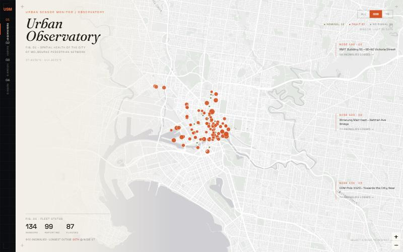

Selected work
Flagship
Urban Sensor Monitor
A spatial-intelligence platform that watches the health of a sensor fleet (the City of Melbourne pedestrian network). It learns each sensor's normal pattern, flags outages, flat-lines and off-baseline drift, maps the whole fleet in real time, and writes a weekly health report with a local language model. Detection is validated with precision and recall against injected faults. Deployed as a single Docker service.
CanLog
A CAN-bus log analyser: it loads candump captures, profiles each message ID's normal behaviour, and flags anomalies such as dropouts, timing drift and out-of-range values, backed by a PostgreSQL schema, a Streamlit dashboard and a local-LLM report. The same method as Urban Sensor Monitor, applied to vehicle-network data.
Brain Tumor Detection
A deep-learning notebook that classifies brain MRI scans to detect the presence of tumors, taking a dataset of labelled scans through preprocessing, model training and evaluation.
Heart Failure Prediction
A machine-learning notebook that predicts heart-failure risk from clinical patient records, covering exploratory analysis, feature preparation, model training and evaluation on held-out data.
ASL Recognition
Real-time American Sign Language letter recognition from a webcam feed, combining OpenCV for video, MediaPipe for hand tracking, and a TensorFlow model to classify the hand shapes live.
CarAI
A driving game built in pygame, paired with a PyTorch agent trained to learn to play it from scratch. A hands-on exploration of training an agent against an environment you control end to end.
Image Classifier
An image-classification model in Python, training a neural network to sort images into categories and reporting its accuracy on a test set.